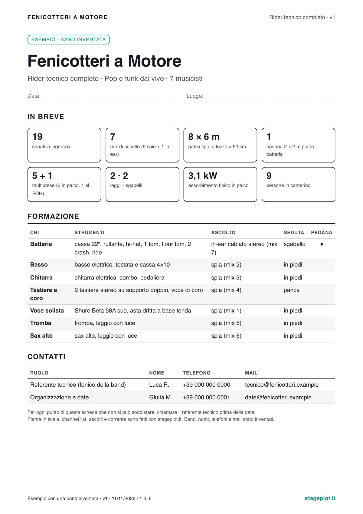
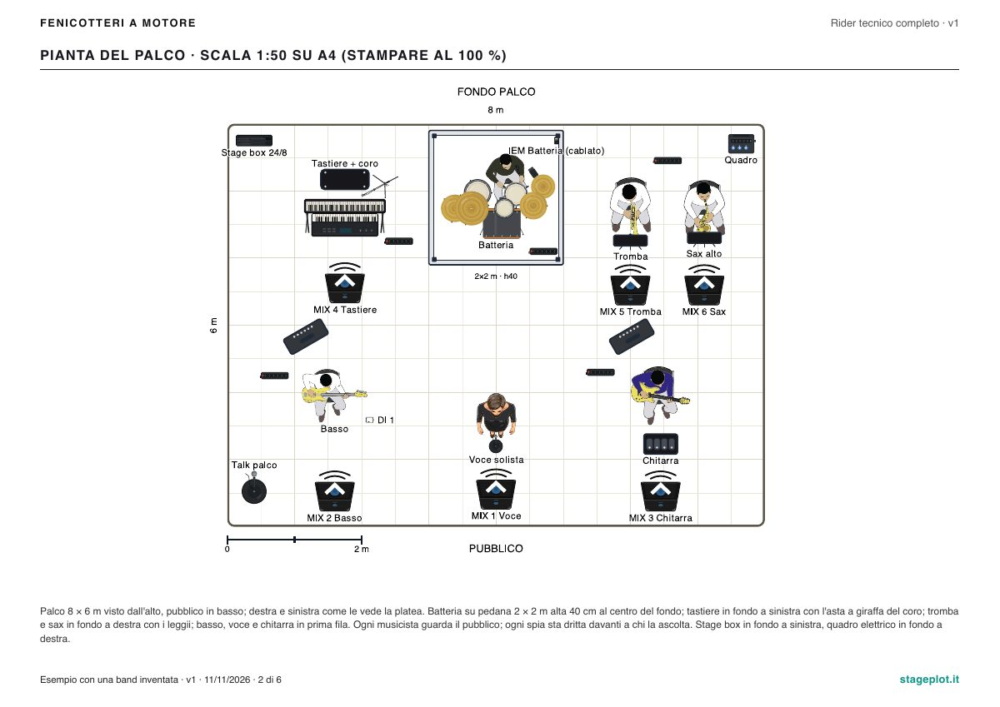

Il rider tecnico della band, fatto da un sound engineer
Ci mandate quello che avete. In 72 ore ricevete il rider pronto da mandare a locali e service.
In breve: il rider tecnico completo è il documento che una band manda prima di ogni concerto: pianta del palco in scala, canali, ascolti, corrente, luci, ospitalità, orari e contatti. Con questo servizio lo prepariamo noi dal vostro materiale e un sound engineer lo controlla prima della consegna. Costa 59 €, arriva in PDF in 72 ore, insieme al progetto su stageplot.it che potete cambiare da soli, gratis.
Cosa ricevete
- Stage plot in scala, con chi sta dove e verso dove suona
- Channel list numerata, con microfoni, DI e aste
- Ascolti: spie o in-ear, chi sente cosa
- Corrente: dove servono le prese e quanta potenza
- Luci di base, scritte in modo che il locale capisca
- Ospitalità: camerino, acqua, pasti, parcheggio
- Orari: arrivo, montaggio, soundcheck, concerto
- Contatti del vostro referente tecnico
Tutto in un PDF A4 con versione e data su ogni pagina, e il progetto aperto su stageplot.it per le date in cui il palco cambia.
Un esempio
Il rider di una band inventata di sette elementi, preparato così come lo ricevereste voi.


Scarica il PDF d'esempio (A4).
Come funziona
- Compilate il moduloChi siete, chi suona cosa, il palco dove suonate di solito. Il modulo non chiede soldi.
- Vi rispondiamo entro un giorno lavorativoDa simone@stageplot.it, con la conferma, il modo di pagare e le domande su quello che manca.
- Prepariamo il riderCon gli strumenti di stageplot.it e le regole che uso sui palchi veri.
- Lo controllo ioRiga per riga, come se dovessi montare quel palco il giorno dopo.
- Ricevete PDF e progettoEntro 72 ore. Se c'è da cambiare qualcosa, una correzione è compresa.
Chi lo controlla
Sono Simone Castellan, sound engineer. Ogni anno lavoro su decine di concerti, dalle band alle orchestre, e di rider ne leggo tanti: quelli fatti bene si capiscono in un minuto, gli altri si scoprono la sera stessa.
Il vostro rider non parte finché non l'ho guardato io. Se qualcosa non torna, vi scrivo prima di consegnarlo.
Per chi è: band e gruppi fino a 12 musicisti, una formazione, un palco tipo. Orchestre, cori ed eventi con più palchi o più scene si fanno su preventivo. Non comprende noleggi, contatti col service al posto vostro e sopralluoghi.
Preferite farlo da soli? L'editor di stageplot.it è gratis e lo resta. Per capire cosa ci va dentro c'è la guida al rider tecnico e quella alla scheda tecnica della band.
Richiedi il rider
Bastano cinque minuti. Se avete un rider vecchio o delle foto, potete mandarle dopo, rispondendo alla nostra mail.
Domande frequenti
Cosa vi devo mandare?
Quello che avete: un vecchio rider, una lista dei canali, le foto del palco di una serata, anche solo l'elenco di chi suona cosa. Se manca qualcosa ve lo chiediamo noi.
Quanto ci mettete?
72 ore, in giorni lavorativi, da quando abbiamo il materiale e la conferma. Se vi serve per una data vicina, scrivetelo nel modulo.
Se c'è da cambiare qualcosa?
Un giro di correzioni è compreso. Dopo avete il progetto su stageplot.it: lo cambiate da soli, gratis, ogni volta che cambia il palco.
Come si paga?
Il modulo non chiede soldi. Vi rispondiamo con la conferma e il modo di pagare; si parte dopo il vostro sì. Fattura su richiesta.
Lo stage plot non era gratis?
Sì, e resta gratis: l'editor di stageplot.it fa stage plot, channel list e PDF senza pagare niente. I 59 euro sono per chi preferisce che il rider lo prepariamo noi.
Va bene anche per un'orchestra o un evento?
Il prezzo vale per band e gruppi fino a 12 musicisti, una formazione e un palco tipo. Orchestre, cori, eventi con più scene o più palchi si fanno su preventivo, dalla pagina della consulenza.